פשוט להצליח במתמטיקה › בחינות בגרות › שאלון 35571 › קיץ מועד א 2022
בגרות 35571 – קיץ מועד א 2022
בחינת הבגרות במתמטיקה 35571 (5 יח״ל, שאלון ראשון, כיתה י״א) – קיץ מועד א 2022 תשפ״ב. כאן השאלון המקורי והפתרון הרשמי של משרד החינוך, וסרטוני הסבר על הנושאים שמופיעים בשאלון.
סרטוני הסבר לפי הנושאים בשאלון 35571
שאלות קצרות
 שאלות קצרות 571 בגרות GOOL 2
שאלות קצרות 571 בגרות GOOL 2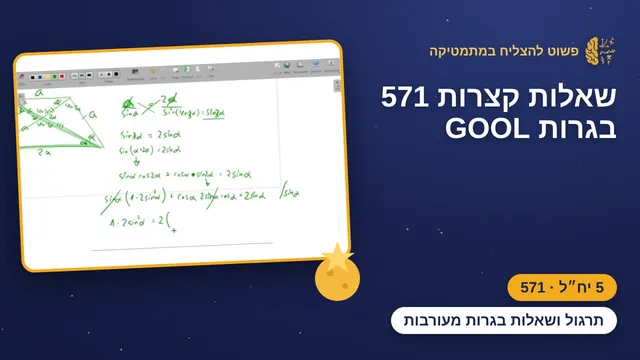
שאלות קצרות 571 בגרות GOOL אינדוקציה 571 שאלת בגרות
אינדוקציה 571 שאלת בגרות גאומטריה שאלה מתוקה ויפה שאלת בגרות 571
גאומטריה שאלה מתוקה ויפה שאלת בגרות 571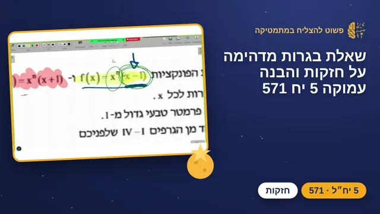
שאלת בגרות מדהימה על חזקות והבנה עמוקה 5 יח 571 הסתברות 571 בגרות 5 יח 2
הסתברות 571 בגרות 5 יח 2 חקירת פונקציית שבר 571 שאלות בגרות 5 יח
חקירת פונקציית שבר 571 שאלות בגרות 5 יח טריגו 571 שאלת בגרות
טריגו 571 שאלת בגרות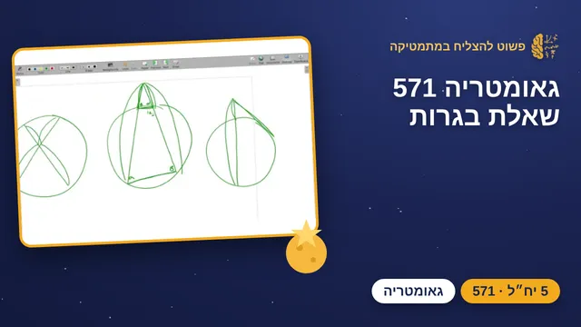
גאומטריה 571 שאלת בגרות שאלה 6 571 שאלת בגרות
שאלה 6 571 שאלת בגרות הסתברות ברנולי 5 יח שאלון 571
הסתברות ברנולי 5 יח שאלון 571 סדרות 5 יח 571 מטורפת
סדרות 5 יח 571 מטורפת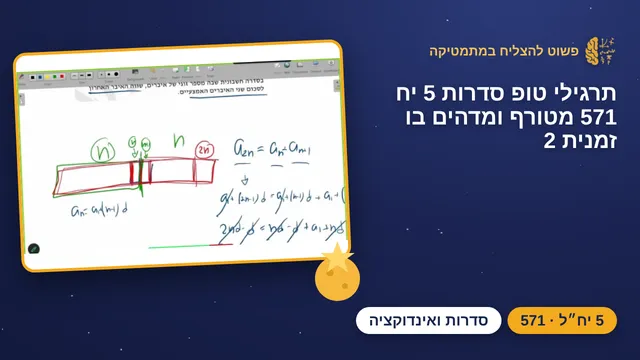
תרגילי טופ סדרות 5 יח 571 מטורף ומדהים בו זמנית 2 תרגילי טופ סדרות 5 יח 571 מטורף ומדהים בו זמנית 3
תרגילי טופ סדרות 5 יח 571 מטורף ומדהים בו זמנית 3 תרגילי טופ סדרות 5 יח 571 מטורף ומדהים בו זמנית 1
תרגילי טופ סדרות 5 יח 571 מטורף ומדהים בו זמנית 1 תרגילי קעירות וקשר בין פונק 571 5 יח מתמטיקה הגאונים 2
תרגילי קעירות וקשר בין פונק 571 5 יח מתמטיקה הגאונים 2 תרגילי קעירות וקשר בין פונק 571 5 יח מתמטיקה הגאונים 1
תרגילי קעירות וקשר בין פונק 571 5 יח מתמטיקה הגאונים 1 תרגילי קעירות וקשר בין פונק 571 5 יח מתמטיקה הגאונים 3
תרגילי קעירות וקשר בין פונק 571 5 יח מתמטיקה הגאונים 3 בעיות קיצון 5 יח 571 מדהימות ומתוקות 2
בעיות קיצון 5 יח 571 מדהימות ומתוקות 2 בעיות קיצון 5 יח 571 מדהימות ומתוקות 3
בעיות קיצון 5 יח 571 מדהימות ומתוקות 3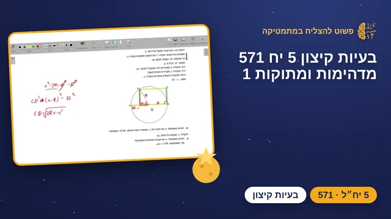
בעיות קיצון 5 יח 571 מדהימות ומתוקות 1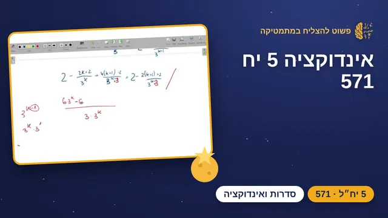
אינדוקציה 5 יח 571 סדרות הנדסית מטורפת 571 GOOL
סדרות הנדסית מטורפת 571 GOOL שאלת גאומטריה שאלות קצרות יפה וקטנה 571
שאלת גאומטריה שאלות קצרות יפה וקטנה 571 קשר בין שלושת הגרפים כולל אינטגרל מיוחד 571
קשר בין שלושת הגרפים כולל אינטגרל מיוחד 571 שאלות קצרות 5 יח שאלון 571 – חקירת טריגו
שאלות קצרות 5 יח שאלון 571 – חקירת טריגו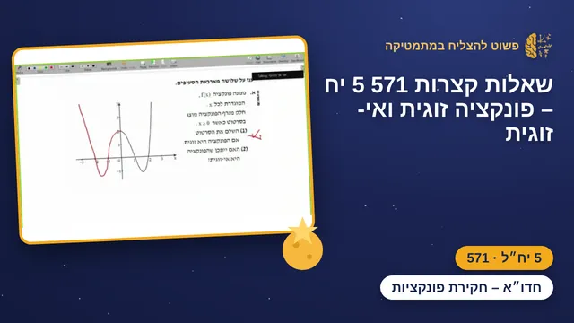
שאלות קצרות 571 5 יח – פונקציה זוגית ואי-זוגית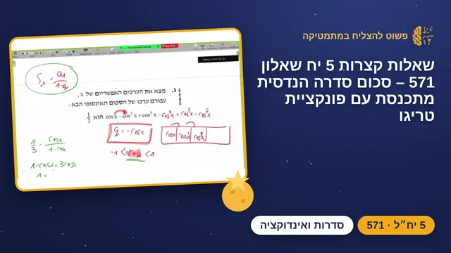
שאלות קצרות 5 יח שאלון 571 – סכום סדרה הנדסית מתכנסת עם פונקציית טריגו שאלות קצרות 571 – תחום הגדרה שבר ושורש 5 יח 2
שאלות קצרות 571 – תחום הגדרה שבר ושורש 5 יח 2 שאלות קצרות 571 – תחום הגדרה שבר ושורש 5 יח
שאלות קצרות 571 – תחום הגדרה שבר ושורש 5 יח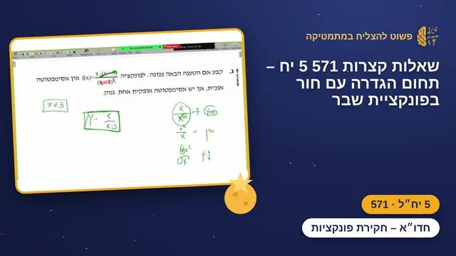
שאלות קצרות 571 5 יח – תחום הגדרה עם חור בפונקציית שבר שאלות קצרות 5 יח 571
שאלות קצרות 5 יח 571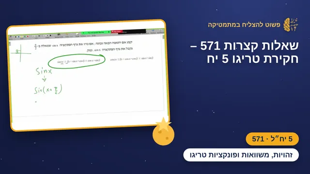
שאלות קצרות 571 – חקירת טריגו 5 יח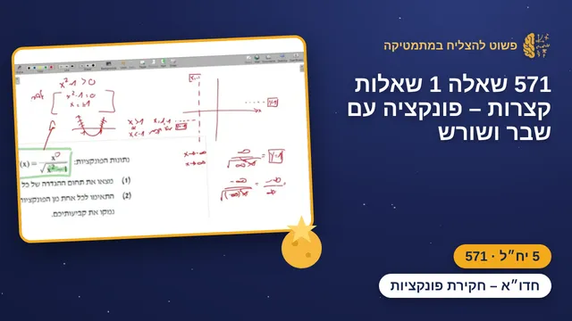
571 שאלה 1 שאלות קצרות – פונקציה עם שבר ושורש571 שאלה 1 שאלות קצרות – קשר בין פונקציה לנגזרת ואינטגרל הסבר משמעות פונקציה ונגזרת – הבסיס של הבסיס שאלון 471
הסבר משמעות פונקציה ונגזרת – הבסיס של הבסיס שאלון 471 אסימפטוטה אופקית – הסבר נדיר ביותר 471
אסימפטוטה אופקית – הסבר נדיר ביותר 471 חקירה מלאה של פונקציה רציונלית (מנה) שאלון 471 571 – מהבסיס עד הסוף
חקירה מלאה של פונקציה רציונלית (מנה) שאלון 471 571 – מהבסיס עד הסוף חקירת שבר עם סעיפים חכמים – שאלה פצצה 471 571
חקירת שבר עם סעיפים חכמים – שאלה פצצה 471 571 חקירת שורש עם נעלם וחקירה מלאה עם סעיפים חכמים 471 571
חקירת שורש עם נעלם וחקירה מלאה עם סעיפים חכמים 471 571 חקירת פולינום עם הבנה ומחשבה – לפתוח תודעה 471
חקירת פולינום עם הבנה ומחשבה – לפתוח תודעה 471 פונקציית שבר רציונלית – שאלה בסיסית על מציאת שיפוע 471-571חקירת שבר עם סעיפים חכמים רמת 5 יח כיתה י 571 1
פונקציית שבר רציונלית – שאלה בסיסית על מציאת שיפוע 471-571חקירת שבר עם סעיפים חכמים רמת 5 יח כיתה י 571 1 חקירת שבר עם סעיפים חכמים רמת 5 יח כיתה י 571 2
חקירת שבר עם סעיפים חכמים רמת 5 יח כיתה י 571 2 פונקציה מורכבת – פתרון משוואות, שיפועים ומשוואת משיק 481 471 2
פונקציה מורכבת – פתרון משוואות, שיפועים ומשוואת משיק 481 471 2 פונקציה מורכבת – פתרון משוואות, שיפועים ומשוואת משיק 481 471 1
פונקציה מורכבת – פתרון משוואות, שיפועים ומשוואת משיק 481 471 1 גאומטריה 5 יח תרגיל בגרות 2
גאומטריה 5 יח תרגיל בגרות 2 הנדסית 5 יח בגרות
הנדסית 5 יח בגרות חקירת טריגו שאלת בגרות מתוקה מאוד 5 יח כיתה יא
חקירת טריגו שאלת בגרות מתוקה מאוד 5 יח כיתה יא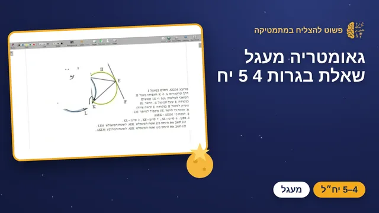
גאומטריה מעגל שאלת בגרות 4 5 יח סדרה חשבונית וסדרה הנדסית – שאלת בגרות ל-4 ו-5 יח
סדרה חשבונית וסדרה הנדסית – שאלת בגרות ל-4 ו-5 יח סדרה חשבונית ל-4 ו-5 יח – שאלת בגרות קטלנית
סדרה חשבונית ל-4 ו-5 יח – שאלת בגרות קטלנית אינטגרל ברמת 5 יח – הסבר ושאלת בגרות
אינטגרל ברמת 5 יח – הסבר ושאלת בגרות בעיות קיצון – הסבר התהליך ותרגיל בגרות 4 יח (מומלץ גם ל-5 יח)תרגיל מעגל גאומטריה 5 יח – תרגיל בגרות פתור
בעיות קיצון – הסבר התהליך ותרגיל בגרות 4 יח (מומלץ גם ל-5 יח)תרגיל מעגל גאומטריה 5 יח – תרגיל בגרות פתור חקירות שורש – שאלות בגרות והסבר כל החומר
חקירות שורש – שאלות בגרות והסבר כל החומר הסתברות עץ וטבלה – שאלות בגרות וחזרה על כל החומר
הסתברות עץ וטבלה – שאלות בגרות וחזרה על כל החומר הסתברות עץ וטבלה כולל מותנה ושאלות בגרות – הסבר כל החומר
הסתברות עץ וטבלה כולל מותנה ושאלות בגרות – הסבר כל החומר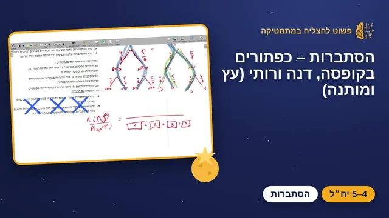
הסתברות – כפתורים בקופסה, דנה ורותי (עץ ומותנה) הסתברות בטבלה עם מותנה – כנס שוטרים, שופטים ועורכי דין
הסתברות בטבלה עם מותנה – כנס שוטרים, שופטים ועורכי דיןסדרות, אינדוקציה והסתברות
אינדוקציה 571 שאלת בגרותהסתברות 571 בגרות 5 יח 2הסתברות ברנולי 5 יח שאלון 571סדרות 5 יח 571 מטורפתתרגילי טופ סדרות 5 יח 571 מטורף ומדהים בו זמנית 2תרגילי טופ סדרות 5 יח 571 מטורף ומדהים בו זמנית 3תרגילי טופ סדרות 5 יח 571 מטורף ומדהים בו זמנית 1אינדוקציה 5 יח 571סדרות הנדסית מטורפת 571 GOOLהנדסית 5 יח בגרותסדרה חשבונית וסדרה הנדסית – שאלת בגרות ל-4 ו-5 יחסדרה חשבונית ל-4 ו-5 יח – שאלת בגרות קטלניתהסתברות עץ וטבלה – שאלות בגרות וחזרה על כל החומרהסתברות עץ וטבלה כולל מותנה ושאלות בגרות – הסבר כל החומרהסתברות – כפתורים בקופסה, דנה ורותי (עץ ומותנה)הסתברות בטבלה עם מותנה – כנס שוטרים, שופטים ועורכי דין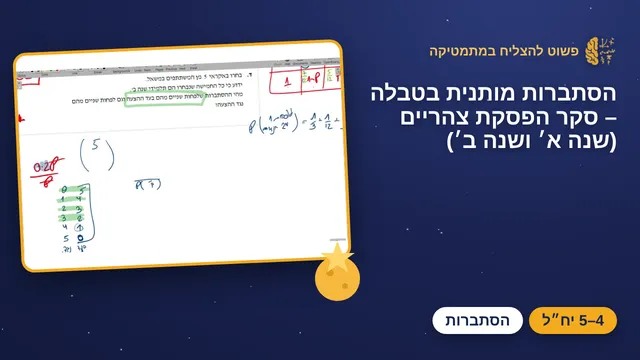
הסתברות מותנית בטבלה – סקר הפסקת צהריים (שנה א׳ ושנה ב׳)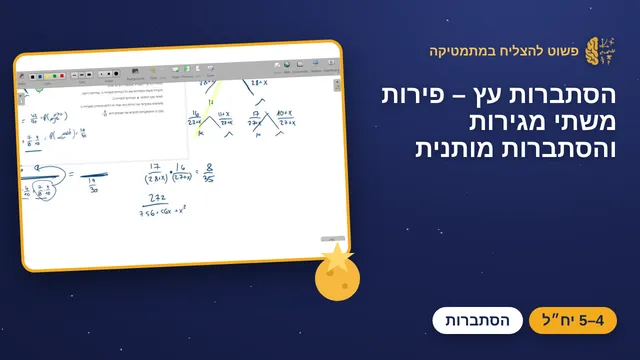
הסתברות עץ – פירות משתי מגירות והסתברות מותנית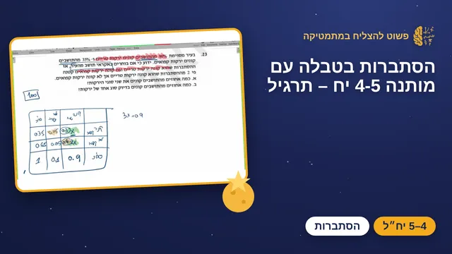
הסתברות בטבלה עם מותנה 4-5 יח – תרגיל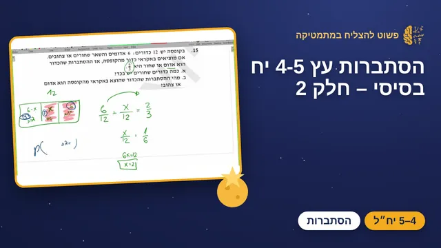
הסתברות עץ 4-5 יח בסיסי – חלק 2 הסתברות מותנית בטבלה 4-5 יח – מבחנים
הסתברות מותנית בטבלה 4-5 יח – מבחנים התפלגות נורמלית – אורך גבעולי פרחים, אחוזים ופרמטרים
התפלגות נורמלית – אורך גבעולי פרחים, אחוזים ופרמטרים סדרה הנדסית – 4 מספרים: מכפלה וסכוםסדרה הנדסית – הפרש בין איברים, מציאת המנה
סדרה הנדסית – 4 מספרים: מכפלה וסכוםסדרה הנדסית – הפרש בין איברים, מציאת המנה הסתברות בטבלה דו-ממדית – רישיון נהיגה בשכבה
הסתברות בטבלה דו-ממדית – רישיון נהיגה בשכבה הסתברות בטבלה – מנוי לנטפליקס בשכבה
הסתברות בטבלה – מנוי לנטפליקס בשכבה הסתברות בטבלה – מתנדבים בשכבות י״א-י״ב
הסתברות בטבלה – מתנדבים בשכבות י״א-י״ב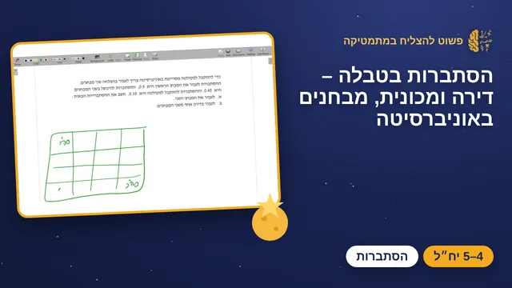
הסתברות בטבלה – דירה ומכונית, מבחנים באוניברסיטה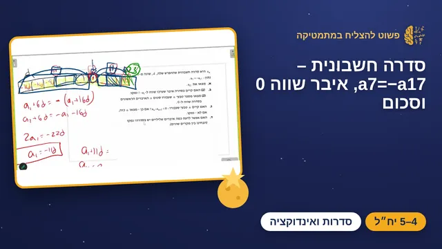
סדרה חשבונית – a7=−a17, איבר שווה 0 וסכום הסבר מהות סדרה חשבונית כולל הנוסחאות 5 יח
הסבר מהות סדרה חשבונית כולל הנוסחאות 5 יח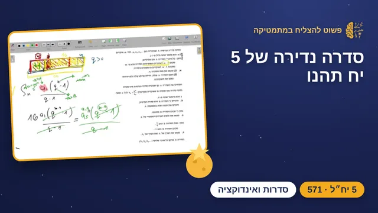
סדרה נדירה של 5 יח תהנו תרגיל 45 סדרה הנדסית כיתה יא 5 יח
תרגיל 45 סדרה הנדסית כיתה יא 5 יח הוכחות סדרה הנדסית 5 יח
הוכחות סדרה הנדסית 5 יח איך מוכיחים סדרה חשבונית
איך מוכיחים סדרה חשבונית סכום סדרה חשבונית 4 5 יח
סכום סדרה חשבונית 4 5 יח הסבר סדרה חשבונית – מהות ונשמה 4 5 יח
הסבר סדרה חשבונית – מהות ונשמה 4 5 יח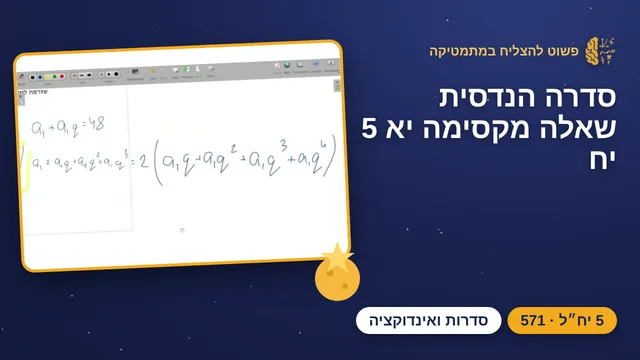
סדרה הנדסית שאלה מקסימה יא 5 יח הוכחה סדרה הנדסית הטופ של הטופ 5 יח 2
הוכחה סדרה הנדסית הטופ של הטופ 5 יח 2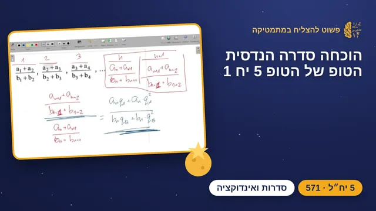
הוכחה סדרה הנדסית הטופ של הטופ 5 יח 1 התפלגות נורמלית – הסבר של כל החומר בשתי דקות וחצי
התפלגות נורמלית – הסבר של כל החומר בשתי דקות וחצי סדרות הנדסיות שאלת בגרות 581 קיץ 2025
סדרות הנדסיות שאלת בגרות 581 קיץ 2025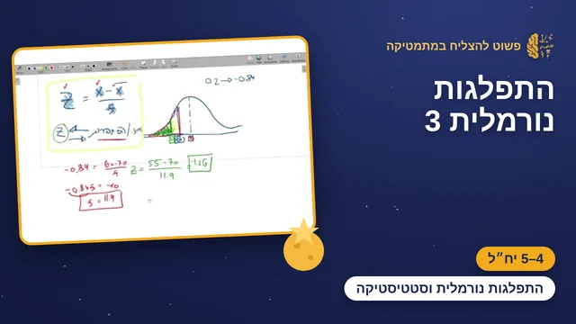
התפלגות נורמלית 3 התפלגות נורמלית
התפלגות נורמלית התפלגות נורמלית 2
התפלגות נורמלית 2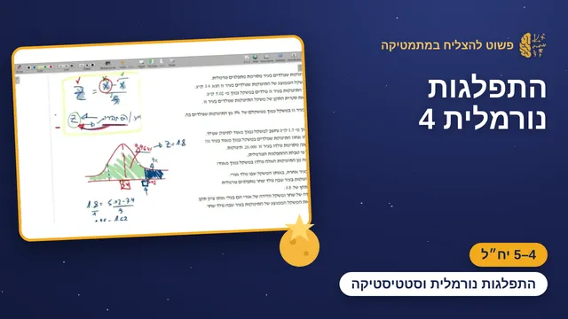
התפלגות נורמלית 4 הסתברות – מהות, משמעות והסבר
הסתברות – מהות, משמעות והסבר הסתברות מותנית – תרגילים לדוגמה עץ 2
הסתברות מותנית – תרגילים לדוגמה עץ 2 הסתברות מותנית – תרגילים לדוגמה עץ 3הסתברות מותנית – תרגילים לדוגמה עץ 1
הסתברות מותנית – תרגילים לדוגמה עץ 3הסתברות מותנית – תרגילים לדוגמה עץ 1 הסתברות מותנית דיאגרמת עץ – הסבר ודוגמה
הסתברות מותנית דיאגרמת עץ – הסבר ודוגמה הסתברות שאלה 4 שאלת בגרות 5 יח 581
הסתברות שאלה 4 שאלת בגרות 5 יח 581 סדרות חורף 2024 581 – שאלת בגרות פתורה 5 יח
סדרות חורף 2024 581 – שאלת בגרות פתורה 5 יח סדרות שאלת בגרות 581
סדרות שאלת בגרות 581 הסתברות טבלה – פתרון שאלות והסברים חלק א
הסתברות טבלה – פתרון שאלות והסברים חלק א הסתברות טבלה – פתרון שאלות והסברים חלק ב כולל מותנה
הסתברות טבלה – פתרון שאלות והסברים חלק ב כולל מותנה הסתברות טבלה – פתרון שאלות והסברים חלק ג כולל מותנה עם נעלמים
הסתברות טבלה – פתרון שאלות והסברים חלק ג כולל מותנה עם נעלמים סדרה הנדסית – תרגיל 39 עמ' 230 (יואל גבע חלק ג) 5 יח
סדרה הנדסית – תרגיל 39 עמ' 230 (יואל גבע חלק ג) 5 יח קיץ 2022 מועד ב – הסתברות טבלה שאלה 3
קיץ 2022 מועד ב – הסתברות טבלה שאלה 3 אינדוקציה · סרטון קצר
אינדוקציה · סרטון קצר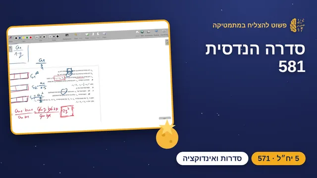
סדרה הנדסית 581גאומטריה וטריגונומטריה במישור
גאומטריה שאלה מתוקה ויפה שאלת בגרות 571טריגו 571 שאלת בגרותגאומטריה 571 שאלת בגרותגאומטריה 5 יח תרגיל בגרות 2גאומטריה מעגל שאלת בגרות 4 5 יחתרגיל מעגל גאומטריה 5 יח – תרגיל בגרות פתור משולש ישר-זווית חסום במעגל – אנליטית, דמיון ושטחים
משולש ישר-זווית חסום במעגל – אנליטית, דמיון ושטחים מעגל ומשולש במערכת צירים – משיק, קוטר ודמיון
מעגל ומשולש במערכת צירים – משיק, קוטר ודמיון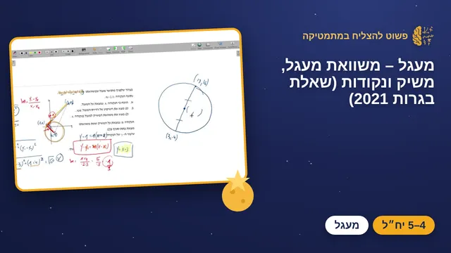
מעגל – משוואת מעגל, משיק ונקודות (שאלת בגרות 2021) שאלות במקבילית 5 יח כיתה י – חלק 3
שאלות במקבילית 5 יח כיתה י – חלק 3 שאלות בטרפז 5 יח כיתה י – חלק 2
שאלות בטרפז 5 יח כיתה י – חלק 2 שאלות במקבילית 5 יח כיתה י – חלק 4שאלות בטרפז 5 יח כיתה י – חלק 1
שאלות במקבילית 5 יח כיתה י – חלק 4שאלות בטרפז 5 יח כיתה י – חלק 1 דמיון משולשים עם שטחים
דמיון משולשים עם שטחים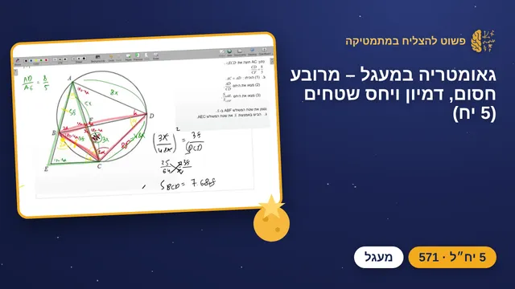
גאומטריה במעגל – מרובע חסום, דמיון ויחס שטחים (5 יח)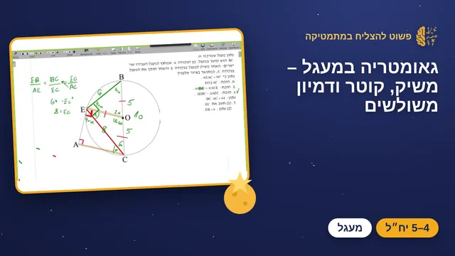
גאומטריה במעגל – משיק, קוטר ודמיון משולשים מעגל ומשיק – דמיון משולשים ויחס שטחים
מעגל ומשיק – דמיון משולשים ויחס שטחים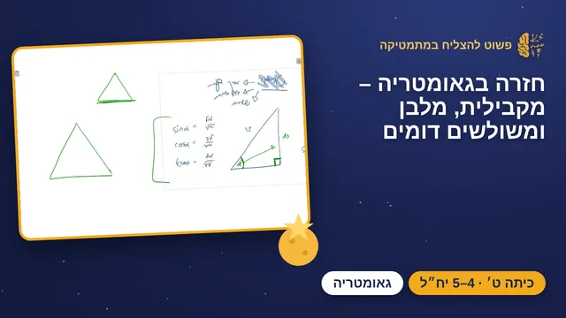
חזרה בגאומטריה – מקבילית, מלבן ומשולשים דומים מעוין עם ריבוע תרגיל מדהים 4 5 יח כיתה ט וי
מעוין עם ריבוע תרגיל מדהים 4 5 יח כיתה ט וי מרובעים כל החוקים כיתה ט י 4 5 יח מטורף הכל ברגע
מרובעים כל החוקים כיתה ט י 4 5 יח מטורף הכל ברגע 30 60 90 משולש
30 60 90 משולש שאלות טרפז ארכימדס 5 יח כיתה י 2שאלות טרפז ארכימדס 5 יח כיתה י 1
שאלות טרפז ארכימדס 5 יח כיתה י 2שאלות טרפז ארכימדס 5 יח כיתה י 1 הסבר קטע אמצעים
הסבר קטע אמצעים גאומטריה עם כל משפחת הריבועים הסבר מדהים
גאומטריה עם כל משפחת הריבועים הסבר מדהים חוצה זוויות עם דמיון
חוצה זוויות עם דמיון דמיון עם שטחים
דמיון עם שטחים שאלות גאומטריה במעגל הבסיס של הבסיס 1
שאלות גאומטריה במעגל הבסיס של הבסיס 1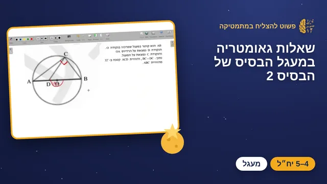
שאלות גאומטריה במעגל הבסיס של הבסיס 2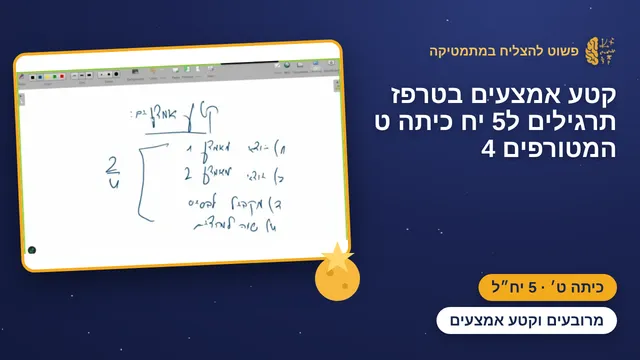
קטע אמצעים בטרפז תרגילים ל5 יח כיתה ט המטורפים 4 קטע אמצעים בטרפז תרגילים ל5 יח כיתה ט המטורפים 2
קטע אמצעים בטרפז תרגילים ל5 יח כיתה ט המטורפים 2 קטע אמצעים בטרפז תרגילים ל5 יח כיתה ט המטורפים 3
קטע אמצעים בטרפז תרגילים ל5 יח כיתה ט המטורפים 3 קטע אמצעים בטרפז תרגילים ל5 יח כיתה ט המטורפים
קטע אמצעים בטרפז תרגילים ל5 יח כיתה ט המטורפים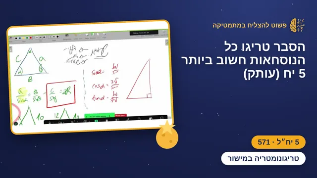
הסבר טריגו כל הנוסחאות חשוב ביותר 5 יח (עותק) הסבר משולש ישר זווית ומשפט הסינוסים
הסבר משולש ישר זווית ומשפט הסינוסים תרגילים מדהימים של ישר זווית ומשפט הסינוסים 2
תרגילים מדהימים של ישר זווית ומשפט הסינוסים 2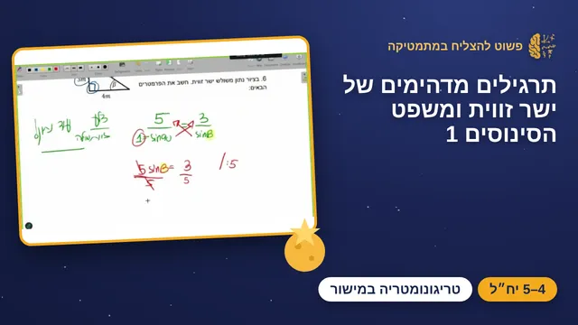
תרגילים מדהימים של ישר זווית ומשפט הסינוסים 1 תרגילים מדהימים של ישר זווית ומשפט הסינוסים 5
תרגילים מדהימים של ישר זווית ומשפט הסינוסים 5 תרגילים מדהימים של ישר זווית ומשפט הסינוסים 4
תרגילים מדהימים של ישר זווית ומשפט הסינוסים 4 תרגילים מדהימים של ישר זווית ומשפט הסינוסים 3
תרגילים מדהימים של ישר זווית ומשפט הסינוסים 3 הסבר מפגש תיכונים כיתה י 5 יח
הסבר מפגש תיכונים כיתה י 5 יח תרגילי מפגש תיכונים כיתה י 4 5 יח 2
תרגילי מפגש תיכונים כיתה י 4 5 יח 2 תרגילי מפגש תיכונים כיתה י 4 5 יח 1
תרגילי מפגש תיכונים כיתה י 4 5 יח 1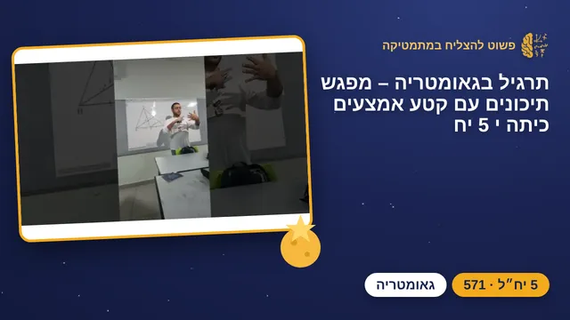
תרגיל בגאומטריה – מפגש תיכונים עם קטע אמצעים כיתה י 5 יח הסבר של כל הרעיונות של מקבילית, מלבן, מעוין וריבוע 5 יח
הסבר של כל הרעיונות של מקבילית, מלבן, מעוין וריבוע 5 יח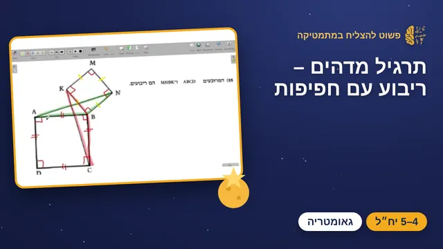
תרגיל מדהים – ריבוע עם חפיפות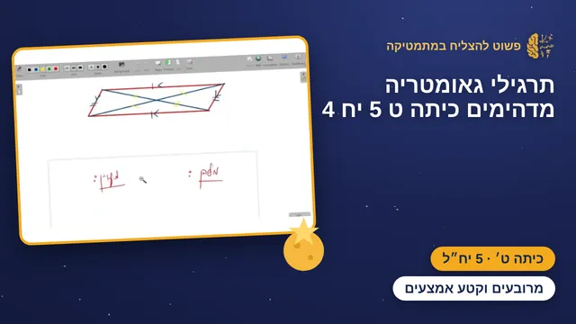
תרגילי גאומטריה מדהימים כיתה ט 5 יח 4 תרגילי גאומטריה מדהימים כיתה ט 5 יח 1
תרגילי גאומטריה מדהימים כיתה ט 5 יח 1 תרגילי גאומטריה מדהימים כיתה ט 5 יח 3
תרגילי גאומטריה מדהימים כיתה ט 5 יח 3 תרגילי גאומטריה מדהימים כיתה ט 5 יח 7
תרגילי גאומטריה מדהימים כיתה ט 5 יח 7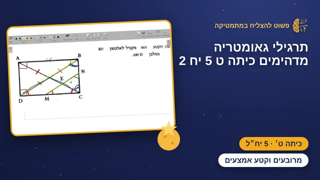
תרגילי גאומטריה מדהימים כיתה ט 5 יח 2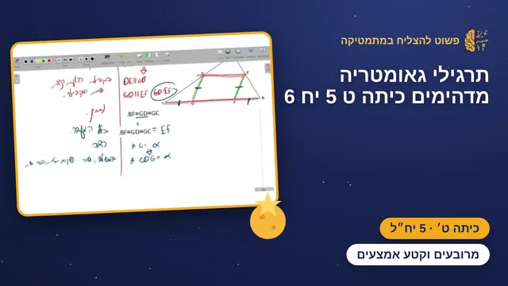
תרגילי גאומטריה מדהימים כיתה ט 5 יח 6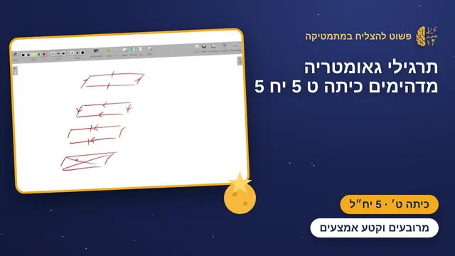
תרגילי גאומטריה מדהימים כיתה ט 5 יח 5 תרגיל מקבילית ברמה גבוהה כיתה ט 5 יח
תרגיל מקבילית ברמה גבוהה כיתה ט 5 יח תרגיל מקבילית כיתה ט 5 יח נדיר ביותר
תרגיל מקבילית כיתה ט 5 יח נדיר ביותר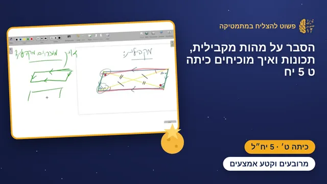
הסבר על מהות מקבילית, תכונות ואיך מוכיחים כיתה ט 5 יחתרגיל בגאומטריה קטע אמצעים כיתה ט 5 יח מפגש תיכונים כולל קטע אמצעים ומשולשים דומים כיתה י 5 יח 1
מפגש תיכונים כולל קטע אמצעים ומשולשים דומים כיתה י 5 יח 1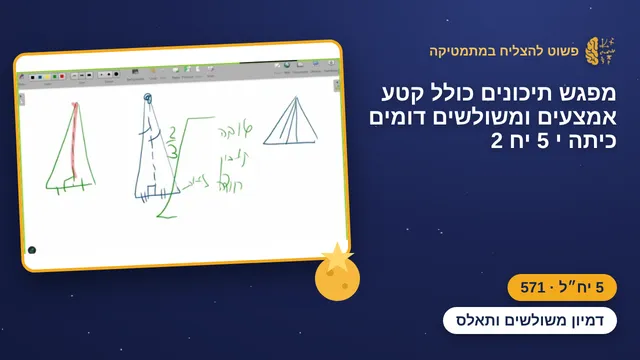
מפגש תיכונים כולל קטע אמצעים ומשולשים דומים כיתה י 5 יח 2 מפגש תיכונים כולל קטע אמצעים ומשולשים דומים כיתה י 5 יח 3
מפגש תיכונים כולל קטע אמצעים ומשולשים דומים כיתה י 5 יח 3חשבון דיפרנציאלי ואינטגרלי פולינום, שורש, שבר, טריגו
חקירת פונקציית שבר 571 שאלות בגרות 5 יחתרגילי קעירות וקשר בין פונק 571 5 יח מתמטיקה הגאונים 2תרגילי קעירות וקשר בין פונק 571 5 יח מתמטיקה הגאונים 1תרגילי קעירות וקשר בין פונק 571 5 יח מתמטיקה הגאונים 3בעיות קיצון 5 יח 571 מדהימות ומתוקות 2בעיות קיצון 5 יח 571 מדהימות ומתוקות 3בעיות קיצון 5 יח 571 מדהימות ומתוקות 1קשר בין שלושת הגרפים כולל אינטגרל מיוחד 571הסבר משמעות פונקציה ונגזרת – הבסיס של הבסיס שאלון 471אסימפטוטה אופקית – הסבר נדיר ביותר 471חקירה מלאה של פונקציה רציונלית (מנה) שאלון 471 571 – מהבסיס עד הסוףחקירת שבר עם סעיפים חכמים – שאלה פצצה 471 571חקירת שורש עם נעלם וחקירה מלאה עם סעיפים חכמים 471 571חקירת פולינום עם הבנה ומחשבה – לפתוח תודעה 471פונקציית שבר רציונלית – שאלה בסיסית על מציאת שיפוע 471-571חקירת שבר עם סעיפים חכמים רמת 5 יח כיתה י 571 1חקירת שבר עם סעיפים חכמים רמת 5 יח כיתה י 571 2פונקציה מורכבת – פתרון משוואות, שיפועים ומשוואת משיק 481 471 2פונקציה מורכבת – פתרון משוואות, שיפועים ומשוואת משיק 481 471 1חקירת טריגו שאלת בגרות מתוקה מאוד 5 יח כיתה יאאינטגרל ברמת 5 יח – הסבר ושאלת בגרותבעיות קיצון – הסבר התהליך ותרגיל בגרות 4 יח (מומלץ גם ל-5 יח)חקירות שורש – שאלות בגרות והסבר כל החומר גרפי f′ ו-f″ – זיהוי, משיק, אינטגרל ופונקציה חדשה
גרפי f′ ו-f″ – זיהוי, משיק, אינטגרל ופונקציה חדשה בעיית קיצון – מלבן בין פרבולה לישר (שיעור מלא)
בעיית קיצון – מלבן בין פרבולה לישר (שיעור מלא)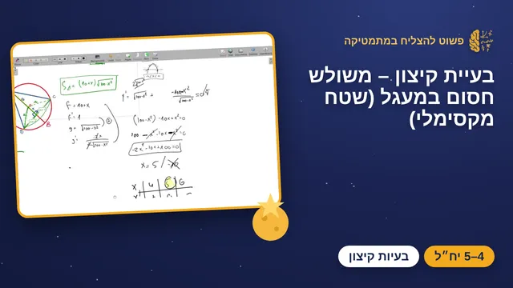
בעיית קיצון – משולש חסום במעגל (שטח מקסימלי) מציאת פונקציה מהנגזרת (שורש) ובעיית קיצון במשולש
מציאת פונקציה מהנגזרת (שורש) ובעיית קיצון במשולש חקירת f(x)=2−2∕x² – משיק, אסימפטוטה ובעיית קיצון
חקירת f(x)=2−2∕x² – משיק, אסימפטוטה ובעיית קיצון חקירת f(x)=1+½x−√(2x+9) – פרמטר, תחום וקיצון
חקירת f(x)=1+½x−√(2x+9) – פרמטר, תחום וקיצון חקירת פונקציה רציונלית y=(ax+16)∕(x²−3x−4) – מציאת פרמטרים
חקירת פונקציה רציונלית y=(ax+16)∕(x²−3x−4) – מציאת פרמטרים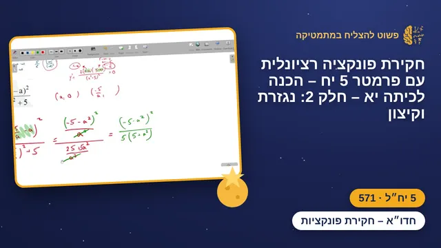
חקירת פונקציה רציונלית עם פרמטר 5 יח – הכנה לכיתה יא – חלק 2: נגזרת וקיצון חקירת פונקציה רציונלית עם פרמטר 5 יח – הכנה לכיתה יא – חלק 1: תחום ואסימפטוטות
חקירת פונקציה רציונלית עם פרמטר 5 יח – הכנה לכיתה יא – חלק 1: תחום ואסימפטוטות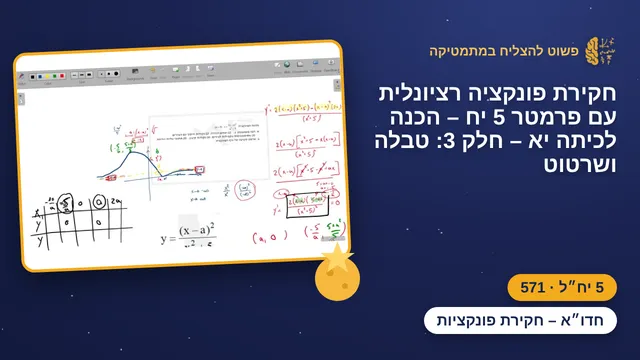
חקירת פונקציה רציונלית עם פרמטר 5 יח – הכנה לכיתה יא – חלק 3: טבלה ושרטוט חקירת פונקציה טריגונומטרית 5 יח – חלק 2: גרף והפונקציה g
חקירת פונקציה טריגונומטרית 5 יח – חלק 2: גרף והפונקציה g חקירת פונקציה טריגונומטרית 5 יח – חלק 1: פתרון המשוואה ונקודות
חקירת פונקציה טריגונומטרית 5 יח – חלק 1: פתרון המשוואה ונקודות מציאת פונקציה מהנגזרת – משיק ופרמטר, f′(x)=(1−x)∕√(−x²+2x+a)
מציאת פונקציה מהנגזרת – משיק ופרמטר, f′(x)=(1−x)∕√(−x²+2x+a) משוואה טריגונומטרית sin2x=4√3cos³x – הוצאת גורם משותף
משוואה טריגונומטרית sin2x=4√3cos³x – הוצאת גורם משותף f(x)=2x³−9x²+12x−a – פרמטר, משיק ושטח
f(x)=2x³−9x²+12x−a – פרמטר, משיק ושטח חקירת פולינום f(x)=x³−3x+2 ושטחים
חקירת פולינום f(x)=x³−3x+2 ושטחים בעיית קיצון – ריבוע ומשולש, סכום שטחים מינימלי
בעיית קיצון – ריבוע ומשולש, סכום שטחים מינימלי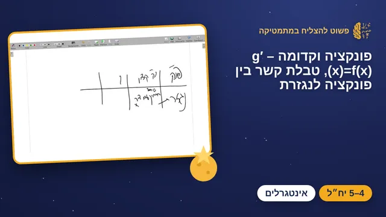
פונקציה וקדומה – g′(x)=f(x), טבלת קשר בין פונקציה לנגזרת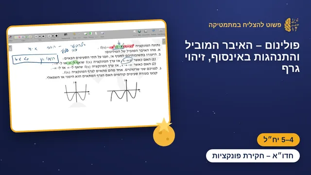
פולינום – האיבר המוביל והתנהגות באינסוף, זיהוי גרף חקירת f(x)=a∕(x²−4) – מציאת פרמטר משיפוע המשיק
חקירת f(x)=a∕(x²−4) – מציאת פרמטר משיפוע המשיק חקירת f(x)=6x(√x−m) – המשך: גרף ושטח
חקירת f(x)=6x(√x−m) – המשך: גרף ושטח חקירת f(x)=1+½x−√(2x+b) – מציאת b ותחום הגדרה
חקירת f(x)=1+½x−√(2x+b) – מציאת b ותחום הגדרה חקירת f(x)=√(5−2x)+bx ופונקציה קדומה
חקירת f(x)=√(5−2x)+bx ופונקציה קדומה חקירת f(x)=±x²√(5+x) – זיהוי גרף ופונקציית נגזרת
חקירת f(x)=±x²√(5+x) – זיהוי גרף ופונקציית נגזרת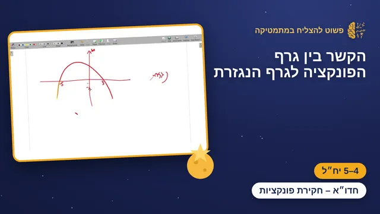
הקשר בין גרף הפונקציה לגרף הנגזרת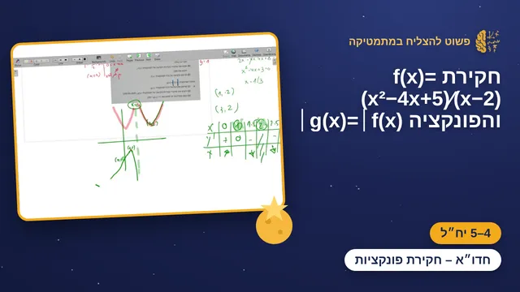
חקירת f(x)=(x²−4x+5)∕(x−2) והפונקציה g(x)=│f(x)│ חקירת f(x)=(2x²−2)∕(x²−4)+1 – אסימפטוטות וזיהוי גרפים
חקירת f(x)=(2x²−2)∕(x²−4)+1 – אסימפטוטות וזיהוי גרפים בעיית קיצון – טרפז בין גרף f(x)=−4∕x² לישר y=2
בעיית קיצון – טרפז בין גרף f(x)=−4∕x² לישר y=2 הקשר בין f, f′ ו-f″ – זיהוי גרפים
הקשר בין f, f′ ו-f″ – זיהוי גרפים חקירת פונקציה מורכבת fx=x²−kx³ עם פרמטר
חקירת פונקציה מורכבת fx=x²−kx³ עם פרמטר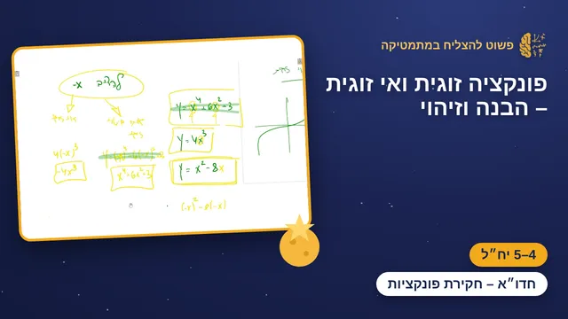
פונקציה זוגית ואי זוגית – הבנה וזיהוי חקירת פולינום fx=3x⁴−2x³ – קיצון ותחומי עלייה וירידה
חקירת פולינום fx=3x⁴−2x³ – קיצון ותחומי עלייה וירידה חקירת פונקציה רציונלית עם פרמטר y=x−1∕x²−b²
חקירת פונקציה רציונלית עם פרמטר y=x−1∕x²−b²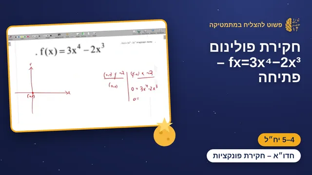
חקירת פולינום fx=3x⁴−2x³ – פתיחה אינטגרל פונק שטח מפוצל
אינטגרל פונק שטח מפוצל סוגי אינטגרליםפיתרון משוואות עם זהויות 5 יח 1
סוגי אינטגרליםפיתרון משוואות עם זהויות 5 יח 1